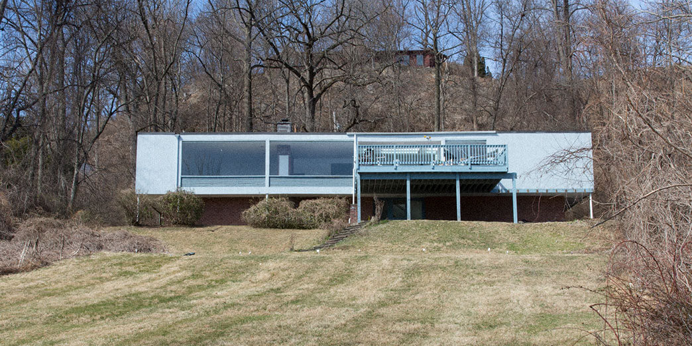
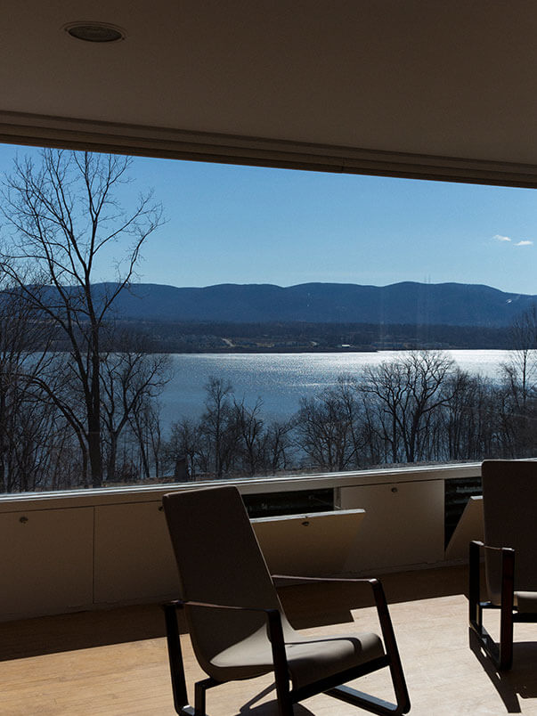
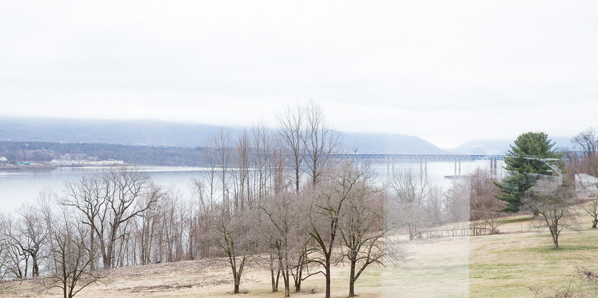
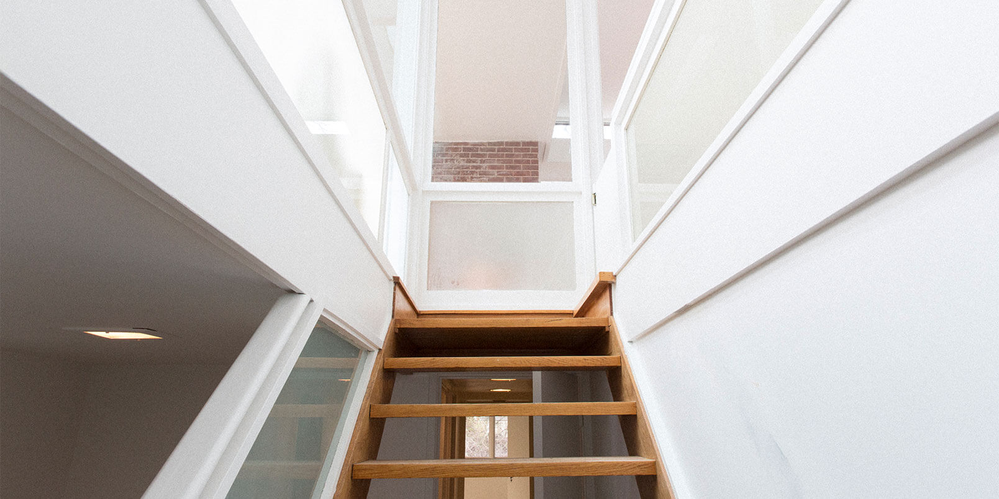
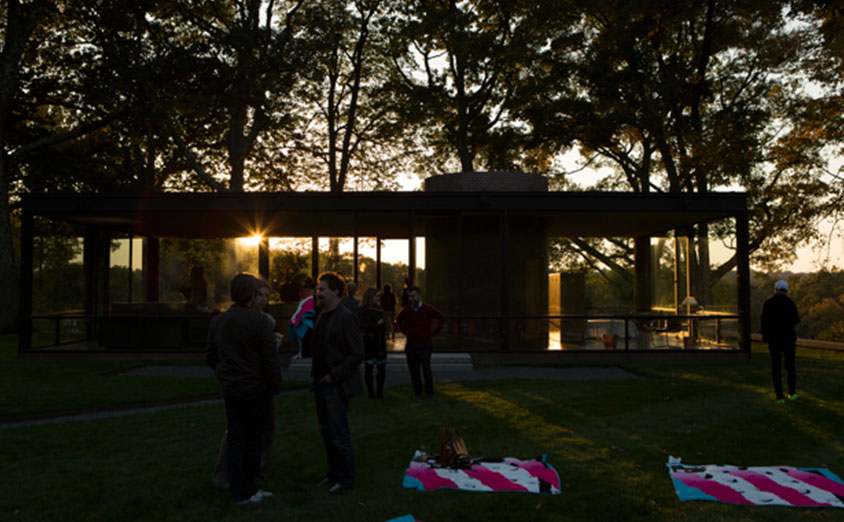
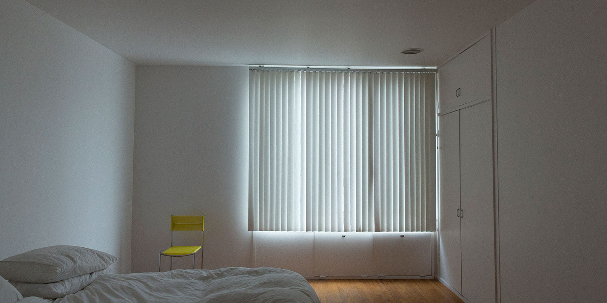
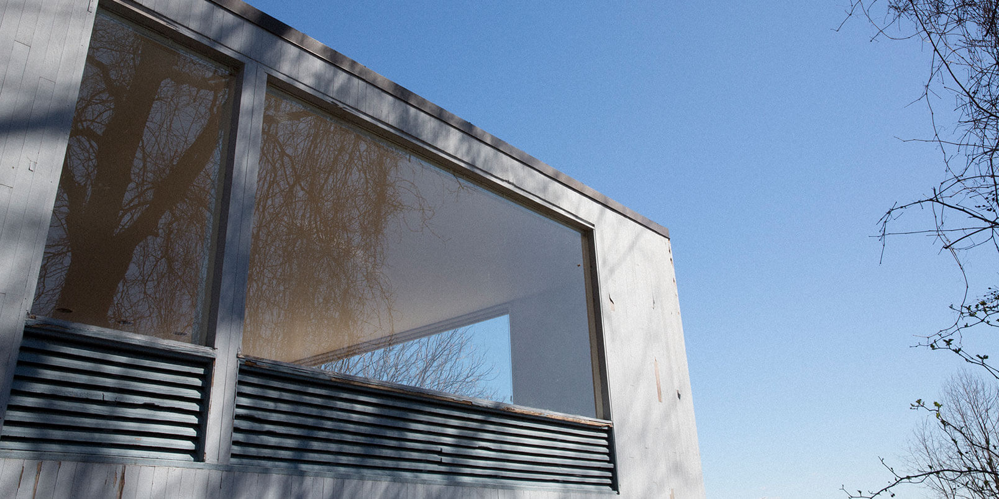

“Every day in this house is most thrilling due to its unique relationship with the environment. His vision of a residence to incorporate the beauty of the Hudson Valley is as timely today as it was in 1949 when the house was completed. It is our hope that future generations will bestow on these 20th century treasures the care and preservation they rightly deserve. Thank you Mr. Johnson for enriching our lives.”
—Richard Zelig, former owner of the Benjanin V. Wolf House
Philip Johnson Obituary Guestbook entry
January 29, 2005


Philip Johnson
Upon graduating from Harvard’s Graduate School of Design in 1945, Philip Johnson had quickly completed high-profile posts in the design and architecture world. Johnson first explored architecture as a critic and curator as head of MoMA’s Architecture Department.

The Wolf House, 1949
The Benjamin V. Wolf House, commissioned just four years into his practice, is a consequential example of his early work suggestive of his important works to come. Set atop a hillside just north of the Beacon Newburgh bridge, The house has sweeping panoramic views of the Husdon River. The Wolfhouse bears much in common with his most famous home, The Glass House, which was erected the same year.
Navigating the whimsy of clients’ demands, each of Johnson’s residential projects were interconnected by its complicated and contradictory maker, torn between ideologies and culture.

The Wolfhouse Today
The Benjamin V. Wolf house has now been reimagined as the Wolfhouse scheduled to launch in fall of 2020. With a collective background in architecture, design, and fine arts curation, the Wolfhouse’s new owners, Jiminie Ha and Jeremy Parker are restoring the property to the original Johnson condition. They’re also applying a rigorous programming layer – one that merges travel, culinary collaborations, visual culture, social influence, and of course, design. Sharing a familiar approach to Philip’s own multidisclipinary background, the spirit of the home continues his legacy.
The Wolfhouse is:
1. An inspiring basecamp for culture-lovers.
2. Enabling designers to display products in situ while leveraging the property’s own content.
3. A living showroom concept featuring furniture and design objects for sale on the Wolfhouse e-commerce storefront site.
4. A cultural space that nurtures dialogue and the creative community through its year-round program of artistic activations.
5. A book, documenting the Wolfhouse’s rehabilitation back to its original Philip Johnson design and evolution into a cultural project.

As a young architect seizing the zeitgeist of Modernism, Philip Johnson’s dialogue with Mies Van der Rohe resulted in a storied body of early work that bears hallmark characteristics: open-plan homes with seamless circulation and plate glass walls offering expansive views of the surrounding natural landscape, which Johnson once playfully characterized as “expensive wallpaper.”

Newburgh, NY
Newburgh, like Philip Johnson, has shared a tumultuous and dynamic past. Once serving as the headquarters to
George Washington’s Continental Army during the American Revolution, Newburgh is now rapidly modernizing its infrastructure. East of the city is the Hudson River—the artist city of Beacon is opposite the river connects to Newburgh via the Newburgh-Beacon Bridge. The creative community has quickly spread from Beacon to Newburgh—as demonstrated in not only the emerging boutiques and art spaces but also emerging culinary experiences and local brands setting roots in this beautiful town.

DIA: Beacon
The Wolfhouse is a 14-minute drive to Dia: Beacon, the art-world mecca comprised of large-scale installations and artworks on extended view in monumental galleries. Dia has singlehandedly revitalized the town of Beacon, transforming the region into an art center.

Storm King Art Center
A 20-minute drive from the Wolfhouse is Storm King Art Center, a 500-acre outdoor museum. Committed to supporting artists and stewarding its landscape, featuring large-scale sculpture and site-specific commissions under the sky.

The Glass House
The Wolfhouse is a 60 mile drive to Philip Johnson’s masterwork, the Glass House in New Caanan, Connecticut.


Contact
For press or partnership:
press@wolfhouseny.com
For general inquiries:
bookings@wolfhouseny.com